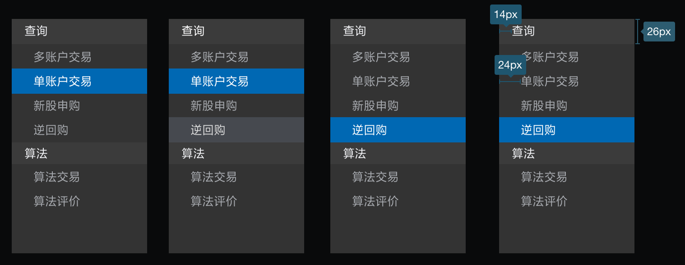
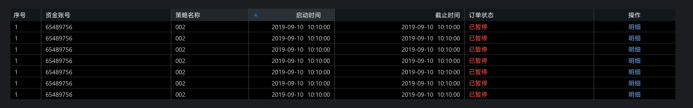
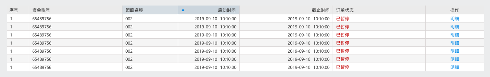
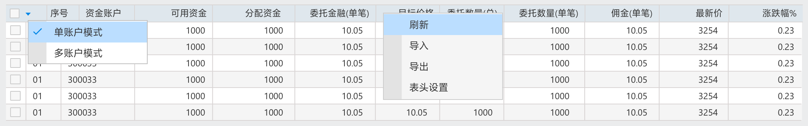
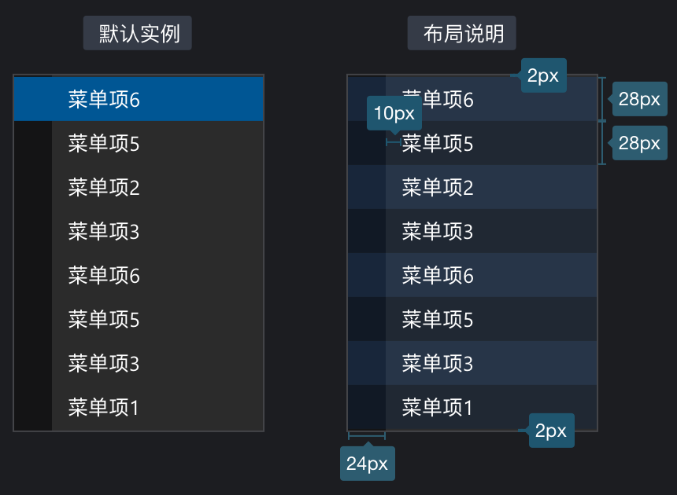
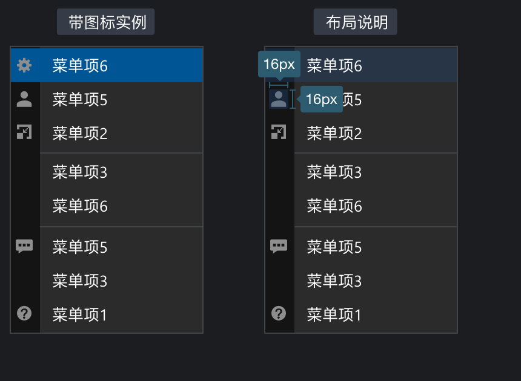
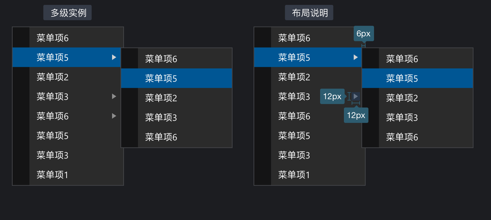
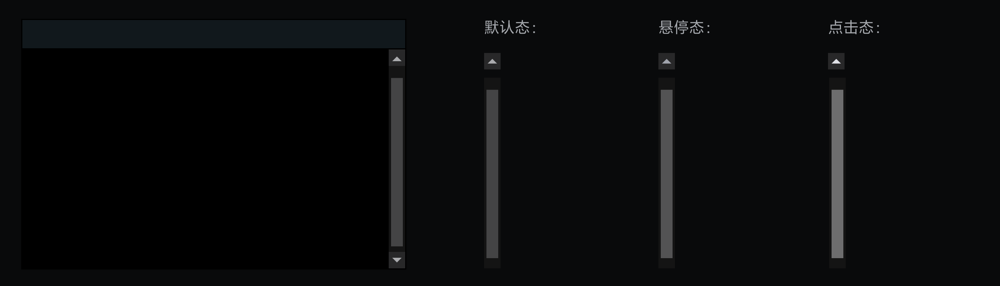
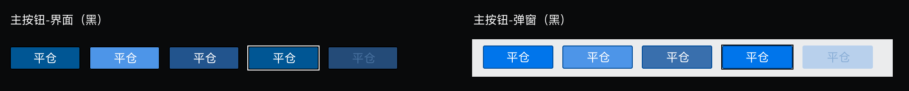

黑色版本
更新提示
2020.3.20
- Button 按钮：新增获取焦点状态样式，详见 Button 按钮->典型实例->主按钮
- Radio单选框：新增选中不可用状态；新增弹窗浅色样式；尺寸大小调整 13px->14px；详见 Radio单选框->基本
- Checkbox多选框：新增选中不可用，部分选中不可用；新增弹窗浅色样式；尺寸大小调整 13px->14px；详见 Checkbox多选框->基本
- Input输入框：新增弹窗浅色样式；新增只读输入框；输入框禁用态填充色修改
#25262A改为#1C1D1F详见Input输入框->基本 - 新增TreeSelect 树选择控件模块
- 新增Alignment数据对齐方式；详见 Alignment数据对齐方式
2020.3.27
- 新增Tabs 标签导航栏；详见Tabs 标签导航栏
- 扩展补充Sider侧边栏；修改悬停态底色；修改悬停态文字颜色；新增全局折叠收起；详见Sider侧边栏
2020.4.3
- 新增右键菜单
- Tabs标签导航新增一级Tabs；详情Tabs标签导航->一级Tabs
- Footer底部栏固定高度缩小为24px；详情Layout布局->尺寸视觉查阅
2020.4.10
- 修改了Tabs标签导航->二级Tabs->弹窗浅色版本的样式；Tab栏与板块的分割线，修改为1px b7b7b7的线（和后期蓝色版本统一一致）
- 修改Input输入框->下拉框样式 添加 1px内描边
Layout布局
协助进行页面级整体布
组件概述
Layout：布局容器，底层模块其下可嵌套 Header Sider Content Footer 或 Layout 本身，可以放在任何父容器中。
Header：顶部导航栏，自带默认样式，且始终固定
Sider：侧边栏，自带默认样式及基本功能，宽度可折叠扩展
Content1：内容展示区，自带默认样式，通常情况下只承载数据列表相关内容
Content2： 功能操作区，自带默认样式，通常情况下承载相关操作表单、侧导航、标题栏等内容
Footer：底部布局，自带默认样式，其下可嵌套任何元素，只能放在 Layout 中
尺寸视觉查阅
| 名称 | 尺寸 | 视觉（黑） |
|---|---|---|
| Header | 高度 32px， 宽度：1440px | #161616 |
| Sider | 宽度150px ， 拓展150px+8n | #2B2B2B |
| Footer | 高度24px | #161616 |
| Content1 | - | #000000 |
| Content2 | - | #2B2B2B |
| Space | 2px | #4C4C4F |
典型的页面布局
上中下布局
顶部-侧边布局-通栏

Header顶部栏
LOGO
| 尺寸 | 左边距 | 上下间距 |
|---|---|---|
| 高度20px 宽度 84px | 10px | 6px |
文字
| 版本 | 字号 | 默认颜色 | 悬停颜色 | 选中颜色 |
|---|---|---|---|---|
| 黑版 | 14px | #BDC0C7 | #F7FAFF | #FFFFFF 加粗Semibold |
ICON
| 版本 | 容器大小 | 默认颜色 | 悬停颜色 | 点击颜色 |
|---|---|---|---|---|
| 黑版 | 16px*16px | #8E8E8E | #D2D2D3 | #616266 |
提供SVG格式图标，请程序调用也使用svg矢量图片，避免高清屏模糊问题
实例展示
选中状态火柴棍颜色 #0086E6

Footer底部栏
文字
| 版本 | 字号 | 默认颜色 |
|---|---|---|
| 黑版 | 12px | #BDC0C7 |
ICON
| 版本 | 容器大小 | 默认颜色 | 悬停颜色 | 点击颜色 |
|---|---|---|---|---|
| 黑版 | 16px*16px | #8E8E8E | #D2D2D3 | #616266 |
Sider 侧边栏
组件概述
Layout：容器，用于菜单项
Menu-title：菜单分组标题，自带默认样式
Menu：菜单项，自带默认样式
Tool：折叠收起操作栏
尺寸视觉快速查阅
| 名称 | 尺寸 | 视觉（黑） |
|---|---|---|
| Layout 容器 | 默认宽度150px | #2B2B2B |
| Menu-title菜单分组标题 | 默认高度28px | #333333 |
| Menu 菜单项 默认 | -- | #2B2B2B |
| Menu 菜单项 悬停 | -- | #46494F |
| Menu 菜单项 选中 | -- | #0086E6 |
| Tool 操作栏 默认 | 默认宽度150px，高度28px | #323337 |
| Tool 操作栏 悬停 | 默认宽度150px，高度28px | #43454A |
| Tool 操作栏 点击 | 默认高度28px | #252629 |
文字
| 版本 | 字号 | 默认颜色 | 悬停颜色 | 选中颜色 |
|---|---|---|---|---|
| 黑版 | 13px | #A6A9AE | #DBDBDB | #FFFFFF |
实例
折叠收起
- 操作栏与容器之间2px ，分别添加1px #0D0D0D； 1px #4C4B4B 2条线
- 折叠状态时，点击菜单项或者操作栏均可展开菜单
- 折叠时容器尺寸变为宽度28px
- 折叠时菜单项文字竖排，选中尺寸宽度20px，圆角2px；四周间距4px

一级导航项
- 文字左边距14px
- 上下文字定位以每项高度垂直居中决定
二级导航项
- 一级导航标题底色#3333333，高度统一为28px，不可选中点击
- 一级导航标题文字13px；颜色#FFFFFF

一级二级混合
- 无子菜单项无底框，颜色背景保持一致
- 与一级导航项对齐
Tabs 标签导航
何时使用
- 提供平级的区域将大块内容进行收纳和展现，保持界面整洁
- 提供了三级选项卡，分别用于不同的场景。
- 一级：卡片式的页签，常用于容器顶部。
- 二级：既可用于容器顶部，也可用于容器内部，是最通用的 Tabs。
- 三级：RadioButton 可作为更次级的页签来使用（目前实例页面中暂无涉及，故暂不提供）。
一级Tabs
组件概述
- Layout：容器层，用于放置tab按钮
- tab按钮：选项按钮，用于内容切换
- line：选项间分割线
尺寸视觉快速查阅
| 名称 | 尺寸 | 视觉（黑） | 视觉（弹窗） |
|---|---|---|---|
| Layout | 固定高度30px | #161616 | |
| Tab默认 | 固定高度24px，默认宽度80px | #161616 | |
| Tab悬停 | -- | #454549 | |
| Tab选中 | -- | #58585C | |
| Tab禁用 | -- | -- | |
| Line选项分割线 | 高度24px；宽度1px | 渐变#161616 透明度 0% ->3D3D40 透明度100% |
文字
- 文字统一大小：13px
| 视觉（黑） | 视觉（弹窗） | |
|---|---|---|
| 默认 | #A6A9AE | |
| 悬停 | #DBDBDB | |
| 选中 | #FFFFFF | |
| 禁用 | #555659 |
实例
- 选中项框上半部分 带2px圆角
- 第一项距容器2px间距

二级Tabs
组件概述
- Layout：容器层，用于放置tab按钮
- tab按钮：选项按钮，用于内容切换
- line：选项间分割线
尺寸视觉快速查阅
| 名称 | 尺寸 | 视觉（黑） | 视觉（弹窗） |
|---|---|---|---|
| Layout | 固定高度26px | 填充#2B2B2B | 填充#EBEDF0 |
| Tab默认 | 固定高度26px，宽度默认最小68px | 填充 #2B2B2B | 填充 #EBEDF0 |
| Tab悬停 | -- | 填充#46494F | 填充 ##D9EAFA |
| Tab选中 | -- | 填充#335179 | 填充 #CBE5FF |
| Tab禁用 | -- | 填充 #2B2B2B | 填充 #EBEDF0 |
| Tab买入选中 | 竖向tab 固定宽度30px | 填充 #93312A | 填充 #C82A2A |
| Tab买入悬停 | -- | 填充#46494F | 填充 #E1E7ED |
| Tab卖出选中 | -- | 填充#2B6C40 | 填充 #009900 |
| Tab卖出悬停 | -- | 填充#46494F | 填充 #E1E7ED |
| Line选项分割线 | 1px | 填充#0D0D0D | 填充 #C3C3C3 |
文字
- 文字统一大小：13px
| 视觉（黑） | 视觉（弹窗） | |
|---|---|---|
| 默认 | #A6A9AE | #3F3E3E |
| 悬停 | #DBDBDB | #333232 |
| 选中 | #FFFFFF | #333232 |
| 禁用 | #555659 | #999999 |


实例组合使用
在标题栏下


在工具栏上


在操作区域上
- 竖向买入卖出tab宽度为30px，比横向的26px略大

Table表格
最基础的数据列表展示，可承载文字、列表、常用于数据展示页面
何时使用
当有大量结构化的数据需要展现时；
当需要对数据进行排序、搜索、分页、自定义操作等复杂行为时
组件概述
Header：表头容器，用于放置表头字段文字
Columns：表格项容器，自带默认样式
Columns-space：表格项容器间隔，自带默认样式
Line：分割线，用于表格内数据项的分割，包括表头表项都使用同一种
尺寸视觉快速查阅
| 名称 | 尺寸 | 视觉（黑） | 视觉（弹窗） |
|---|---|---|---|
| Header 表头容器 | 高度24px | #11181C | #DFE7ED |
| Columns 表格项容器 | 高度22px | #000000 | #FFFFFF |
| Columns-space 间隔 | 高度22px | #161517 | #F5F5F5 |
| Columns-hover 悬浮 | 高度22px | #46494F | #BBCCDC |
| Columns-pressed 选中 | 高度22px | #1C3E6B | #BBDEFF |
| Line 分割线 | 1px | #202124 | #D9D5D5 |
文字
| 名称 | 字号 | 视觉（黑） | 视觉（弹窗） |
|---|---|---|---|
| Title 表头字段 | 12px | #FFFFFF | #323232 |
| Text-text 文字默认 | 12px | #D2D2D3 | #323232 |
| Text-edit 可编辑 | 12px | #6EAFFF 如与卖出同时出现则加下划线区别 | #0086E6 |
| Text-perssed 选中 | 12px | #FFFFFF | #323232 |
| Text-up 涨 | 12px | #FF6155 | #C00000 |
| Text-down 跌 | 12px | #50C752 | #18853A |
| Text-buy 买 | 12px | #FF6155 | #C00000 |
| Text-sell 卖 | 12px | #6EAFFF | #0000A8 |
典型实例
简单的表格

可选择表格
- 第一列选择框，包含单选多选
- 默认点击 checkbox 触发选择行为，需要点击行触发可以参考checkbox说明

带排序表格
- 带有排序控件的字段即可进行排序操作，悬浮时背景色#20262A 选中后背景色#293136

- 带有排序控件的字段即可进行排序操作，悬浮时背景色##D5DDE3 选中后背景色#CBD5DD

买卖方向提示性表格
- 为了区分买卖方向的视觉识别，故将买入与卖出行分别用红蓝进行区别，一般用于买卖操作的记录

包含可编辑单元格的表格
- 编辑输入文本框，详细交互效果可查阅输入框Input模块

嵌套型子表格
- 嵌套部分容器底色#2C2C2C

- 嵌套部分容器底色#E1E1E1
带浮窗筛选表格
- 样式详情参考
右键菜单模块


Context Menu右健菜单
何时使用
- 提供右健辅助功能操作
组件概述
Layout：底层容器，用于放置内容
Left：左侧状态区域，用于放置图标或选中状态等
Menu：菜单项区域
Line：边框及分组线
尺寸视觉快速查阅
| 名称 | 尺寸 | 视觉（黑） | 视觉（弹窗） |
|---|---|---|---|
| Layout 底层容器 | 默认宽度160px | 填充#2B2B2B；内描边1px #434448 | 填充#F5F5F5；内描边1px #CCCCCC |
| Left 左侧状态区域 | 固定宽度24px | 填充#141415 | 填充#E3E3E3 |
| Menu 菜单项区域-默认 | 固定高度28px | 无填充色 | 无填充色 |
| Menu 菜单项区域-悬停 | 固定高度28px | 填充色 #20477B | 填充色 #BBDEFF |
| Line 边框及分组线 | 1px | #434448 | #CCCCCC |
文字
| 版本 | 字号 | 默认颜色 |
|---|---|---|
| 黑版 | 13px | #FFFFFF |
| 弹窗 | 13px | #323232 |
典型实例
默认
- 菜单项顶部与底部与容器间距2px
- 菜单项与左侧区域间距10px


分组
分割线上下间距2px

带图标
- 图标占位区域16*16px


多级
- 多级弹出菜单样式于默认保持一致
- 箭头占位12px*12x，右间距8px
- 多级菜单叠加于上级菜单上，错位距离6px


图标下载
Data format 数据统一格式
设计目标
规范数据表达，保证直观准确一致地理解数据
类型
数值
金额
日期时间
数字脱敏
无数据
Alignment数据对齐方式
| 对齐 | |
|---|---|
| L(list)、序号 | 左对齐 |
| I(identity)、代码编号、账户编号、合同编号等编号类、名称类 | 左对齐 |
| S(symbol)、买入或卖出或申购或登入登出等状态标识 | 左对齐 |
| N(number)、金额数字 | 右对齐 |
| D(data)、日期时间 | 右对齐 |
| C(ctrl)、操作按钮文字 | 居中 |
Radio单选框
何时使用
用于在多个备选项中选中单个状态。
和
Select的区别是，Radio所有选项默认可见，方便用户在比较中选择，因此选项不宜过多
基本
尺寸：14px，包含内描边
文本与Radio间距：8px
从左到右状态为：默认、悬停、选中、选中不可用、未选不可用
文字
| 名称 | 字号 | 视觉（黑） | 视觉（弹窗） |
|---|---|---|---|
| Text-normal | 13px | #D2D2D3 | #333333 |
| Text-disable | 13px | #616266 | #999999 |
控件下载
Checkbox多选框
何时使用
- 在一组可选项中进行多项选择时
- 单独使用可以表示两种状态之间的切换，和
switch类似。区别在于切换switch会直接触发状态改变，而checkbox一般用于状态标记，需要和提交操作配合。
基本
- 尺寸：14px，包含内描边
- 文本与Checkbox间距：8px
- 从左到右状态为：默认、悬停、选中、选中不可用、未选不可用、部分选中、部分选中不可用

文字
| 名称 | 字号 | 视觉（黑） | 视觉（蓝） |
|---|---|---|---|
| Text-normal | 13px | #D2D2D3 | #333333 |
| Text-disable | 13px | #616266 | #999999 |
控件下载
Input输入框
通过鼠标或键盘输入内容，是最基础的表单域的包装
何时使用
- 需要用户输入表单域内容时。
- 提供组合型输入框，带搜索的输入框，还可以进行大小选择。
基本
- 我们为
<Input />输入框定义了三种尺寸（大、默认、小），高度分别为24px、20px和18px - 定义两种输入框之间上下间距（大、小），尺寸分别
8px、4px - 定义两种输入框之间左右间距（大、小），尺寸分别
16px、8px - 标题文字与输入框距离
8px，内部文字与输入框左侧间距6px - 输入框带控件时，控件容器尺寸
16*16px，与输入框右边距2px
| 文字（黑） | 输入框（黑） | 文字（弹窗） | 输入框（弹窗） | |
|---|---|---|---|---|
| 缺省态 | #6D6F73 | - | #BFBFBF | - |
| 默认态 | #FFFFFF | 填充#000000 描边#4C4D52 1px 不带圆角 |
#323232 | 填充#FFFFFF描边#B7B7B7 1px 不带圆角 |
| 悬停态 | #6D6F73 | 填充#000000 描边#0086E6 1px 不带圆角 |
#BFBFBF | 填充#FFFFFF描边#0086E6 1px 不带圆角 |
| 点击态 | #FFFFFF | 填充#000000 描边#0086E6 1px 不带圆角 |
#323232 | 填充#FFFFFF描边#0086E6 1px 不带圆角 |
| 禁用态 | #555659 | 填充#1C1D1F 无描边 不带圆角 |
#999999 | 填充#DEDEDE 无描边 不带圆角 |
| 只读态 | #FFFFFF | 填充#1C1D1F 无描边 不带圆角 |
#323232 | 填充#DEDEDE 无描边 不带圆角 |
| 错误态 | #E94242 | 填充#000000 描边#E94242 1px 不带圆角 |
#E94242 | 填充#FFFFFF 描边#E942421px 不带圆角 |

下拉框样式
- 与输入框间距
1px，宽度跟随输入框尺寸，高度随内容扩展最大高度不超过180px，大于此需要加紧凑型滚动条 - 每项占位区域高度
24px - 字号
13px - 文字内容与容器左间距
6px
| 黑版与弹窗一致 | |
|---|---|
| 底色 | 填充#F7F7F7 1px内描边#0086E6 无圆角 |
| 悬浮色 | #BBCCDC |
| 选中色 | #BBDEFF |
典型案例
带前缀和后缀输入框
- 下载控件
- 控件容器16*16px

搜索框

输入框组合
- 组合间距分为两种：
2px、0px

带步进控件

文本域
- 用于多行输入
- 有下角需要加上控件 下载控件

下拉输入框
- 用于选择输入，控件箭头下载
控件下载
Modal 弹窗
何时使用
- 需要用户处理事务，又不希望跳转页面以致打断工作流程时，可以使用
Modal在当前页面正中打开一个浮层，承载相应的操作。
组件概述
Header：弹窗标题栏，用于放置弹窗名称、关闭缩小等控件
Content1：弹窗默认底层，可看作一级
Content2：弹窗确认内容底色，可看作二级
Tips_iocn：主要用于信息提示弹窗的图标
Trade_icon：主要用于提示交易买入卖出申购等方向的提示图标
Button1：高亮按钮，层级较为突出
Button2：一般按钮，用于普通操作的按钮
Line：分割线，用于内容的分割
基础布局
- 内容区域与容器四周间距为
左16px、上24px、右16px、下16px - 标题文字间距
左8px，上7px - 关闭控件间距
右8px，上7px - 按钮之间间距
8px，与容器间距右16px、下16px - 常用宽度尺寸建议
320px、376px、526px、780px

尺寸视觉快速查阅
| 名称 | 尺寸 | 视觉 |
|---|---|---|
| Header | 固定高度30px | 填充#7A7A7A |
| Content1 | -- | 填充 #EBECED 描边 #7A7A7A 投影 #000000 aplha 0.8 x, y - 0px, 7px blur - 15px |
| Content2 | -- | 填充 #FFFFFF 描边 #B7B7B7 |
| Tips_iocn | 24px*24px | 点击下载icon |
| Trade_icon | 88px*88px | 点击下载icon |
| Button1 | 78px*26px | 填充#0086E6 圆角2px |
| Button2 | 78px*26px | 填充#EEEEEE 圆角2px 描边#B7B7B7 |
| Line | 1px | 填充#E6E6E6 |
文字
| 名称 | 字号 | 视觉（黑） |
|---|---|---|
| 标题栏文字 | 13px | #FFFFFF |
| 一级提示标题 | 16px 加粗 | #000000 |
| 二级提示文字 | 14px | #323232 |
| 正文文字 | 13px | #323232 |
典型实例
普通确认弹窗
- 宽度尺寸：设定大小两种尺寸建议，分别为
320px、376px
简单信息提示框 尺寸320px*160px

简单买卖提示框 尺寸 320px*191px

复杂买卖提示框 尺寸376px*270px

进度条 尺寸 320px*160px

表单操作弹窗
- 宽度尺寸：常用的几种宽度设定
320px、376px、526px、780px、更大尺寸可根据实际UI设计进行调整，原则上最大控制在1300px，需要加上滚动条判断 - 最大高度限定：
700px，如果超出该尺寸，弹窗需出现滚动条，防止信息被遮盖无法看到 - 输入表单之间上下间距为
8px
简单操作弹窗 宽度320px

基础操作弹窗 宽度376px

基础操作弹窗 中 宽度526px

操作弹窗 大 宽度780px


Scrollbar 滚动条
何时使用
- 滚动条是示意当前可视区域在所有内容中的相对位置，用户可以拖动滚动条快速切换可视区域。
- 在内容区域超出现有容器大小时使用
基本
- 我们为
Scrollbar输入框定义了两种尺寸（标准型、紧凑型），宽度分别为14px、3px - 主页面等大宽度模块中使用标准滚动条，下拉列表等小宽度模块中使用小滚动条
- 与容器间距：标准型
0px；紧凑型2px
尺寸视觉快速查阅
黑色皮肤 |
尺寸 | 标准型（14px黑背景） | 标准型（14px弹窗） | 紧凑型（3px黑背景） | 紧凑型（3px弹窗） |
|---|---|---|---|---|---|
| 滚动条底色 | 14px | #141414 | #F4F5F7 | -- | -- |
| 滚动条默认 | 10px | #444445 | #CFCFCF | #444445 | #A6A6A6 |
| 滚动条悬停 | 10px | #535354 | #B3B3B3 | #535354 | #8C8C8C |
| 滚动条按下 | 10px | #6D6D6E | #999999 | -- | -- |
| 箭头底色 | 14px*14px | #282829 | #E8E8E8 | -- | -- |
| 箭头默认 | 8px*8px | 下载控件 | 下载控件 | -- | -- |
| 箭头悬停 | 8px*8px | -- | -- | -- | -- |
| 箭头按下 | 8px*8px | -- | -- | -- | -- |
典型实例
标准型（14px黑）

标准型（14px黑-弹窗）

紧凑型（3px黑）

紧凑型（3px黑-弹窗）

控件下载
Button 按钮
何时使用
标记了一个（或封装一组）操作命令，响应用户点击行为，触发相应的业务逻辑
类型
- 主按钮：用于主行动点，一个操作区域原则上只能有一个主按钮
- 默认按钮：用于没有主次之分的一组行动点
- 链接按钮：用于次要、外链、表格内的行动点
- 幽灵按钮：用于背景色比较复杂的地方
- 虚线按钮：常用于添加区域操作
基本
- 我们为
<Button />按钮定义了三种尺寸（大、中、小），高度分别为40px、26px和20px - 文字在40px按钮中使用16px，其余尺寸中统一使用13px
- 按钮组之间间距一般为8px
典型实例
主按钮
视觉样式说明
- 文字统一为13px，除禁用状态外文字颜色都统一为：#FFFFFF
| 黑色 | 弹窗 | |
|---|---|---|
| 统一样式 | 内描边1px #000 圆角2px | 无描边 圆角2px |
| 默认 | #3D76B8 | #0086E6 |
| 悬停 | #4D95E8 | #4D95E8 |
| 焦点 | 尺寸80px*28px 无填充 描边1px #FFF | 尺寸80px*28px 无填充 描边1px #000 |
| 按下 | #22548D | #396FAD |
| 禁用 | #244B78 文字#47709E | #B8D0EC 文字#8AAED6 |
| 买入默认 | #BA382D | E94242 |
| 买入悬停 | #DD3F31 | #ED6161 |
| 买入按下 | #8F2B22 | #BB3030 |
| 买入禁用 | #661811 文字#943C34 | #F2C3C3 文字#D0928C |
| 卖出默认 | #18683B | #009900 |
| 卖出悬停 | #2DA05F | #49BE49 |
| 卖出按下 | #1F4E33 | 018101 |
| 卖出禁用 | #052B15 文字#1F5B38 | #A4DBA4 文字#7FA87F |



默认按钮
视觉样式说明
- 文字统一为13px
| 黑色 | 弹窗 | |
|---|---|---|
| 统一样式 | 内描边1px #000 圆角2px | 圆角2px |
| 默认 | #595C61 文字#FFF | 填充#EEEEEE 描边#B7B7B7 文字#323232 |
| 悬停 | #767B82 文字#FFF | 填充#EEEEEE 描边#0086E6 文字#0086E6 |
| 按下 | #34373A 文字#FFF | 填充#EEEEEE 描边#396FAD文字#396FAD |
| 禁用 | #28292E 文字#555659 | 填充#DFDFDF 描边#BABABA 文字#999999 |

链接按钮
视觉样式说明
- 文字统一为13px
- 当表格文字与链接按钮颜色一致时，链接按钮需要默认加下划线以示区别
| 黑色 | 弹窗 | |
|---|---|---|
| 默认 | #6EAFFF | #027AD0 |
| 悬停 | #A0CBFF | #4D95E8 |
| 按下 | #2C68AB | #396FAD |
| 禁用 | #555659 | #999999 |


TreeSelect 树选择
何时使用
- 类似 Select 的选择控件，可选择的数据结构是一个树形结构时，可以使用 TreeSelect，例如公司层级、学科系统、分类目录等等。
基本
我们提供两种常见的形式：默认树、带选择控件树
箭头容器尺寸12*12px
- 文字统一13px，左对齐
- 对齐规则：箭头与文字之间8px；箭头与多选框4px；多选框与文字8px；
尺寸视觉快速查阅
| 黑色 | 弹窗 | |
|---|---|---|
| 文字 | #FFFFFF | #323232 |
| 内容区 | 固定高度24px | 固定高度24px |
| 内容区选中 | #20477B | #BBDEFF |
| 内容区悬浮 | #46494F | #BBCCDC |
控件下载
黑色及弹窗公用一套控件箭头
蓝色版本（现在还不对）
Layout布局
协助进行页面级整体布
组件概述
Layout：布局容器，底层模块其下可嵌套 Header Sider Content Footer 或 Layout 本身，可以放在任何父容器中。
Header：顶部导航栏，自带默认样式，且始终固定
Sider：侧边栏，自带默认样式及基本功能，宽度可折叠扩展
Content1：内容展示区，自带默认样式，通常情况下只承载数据列表相关内容
Content2： 功能操作区，自带默认样式，通常情况下承载相关操作表单、侧导航、标题栏等内容
Footer：底部布局，自带默认样式，其下可嵌套任何元素，只能放在 Layout 中
尺寸视觉快速查阅
| 名称 | 尺寸 | 视觉（黑） | 视觉（蓝） |
|---|---|---|---|
| Header | 高度 32px， 宽度：1440px | #161616 | |
| Sider | 宽度150px ， 拓展150px+8n | #2B2B2B | |
| Footer | 高度24px | #161616 | |
| Content1 | - | #000000 | |
| Content2 | - | #2B2B2B | |
| Space | 2px | #4C4C4F |
典型的页面布局
上中下布局
顶部-侧边布局-通栏
Header顶部栏
LOGO
| 尺寸 | 左边距 | 上下间距 |
|---|---|---|
| 高度20px 宽度 84px | 10px | 6px |
文字
| 版本 | 字号 | 默认颜色 | 悬停颜色 | 选中颜色 |
|---|---|---|---|---|
| 黑版 | 14px | #BDC0C7 | #F7FAFF | #FFFFFF 加粗Semibold |
| 蓝版 | 14px |
ICON
| 版本 | 容器大小 | 默认颜色 | 悬停颜色 | 点击颜色 |
|---|---|---|---|---|
| 黑版 | 16px*16px | #8E8E8E | #D2D2D3 | #616266 |
| 蓝版 | 16px*16px |
提供SVG格式图标，请程序调用也使用svg矢量图片，避免高清屏模糊问题
实例展示
选中状态火柴棍颜色 #0086E6
Footer底部栏
文字
| 版本 | 字号 | 默认颜色 |
|---|---|---|
| 黑版 | 12px | #BDC0C7 |
| 蓝版 | 12px |
ICON
| 版本 | 容器大小 | 默认颜色 | 悬停颜色 | 点击颜色 |
|---|---|---|---|---|
| 黑版 | 16px*16px | #8E8E8E | #D2D2D3 | #616266 |
| 蓝版 | 16px*16px |
Sider 侧边栏
组件概述
Layout：容器，用于菜单项
Menu-title：菜单分组标题，自带默认样式
Menu：菜单项，自带默认样式
Tool：折叠收起操作栏
尺寸视觉快速查阅
| 名称 | 尺寸 | 视觉（黑） |
|---|---|---|
| Layout 容器 | 默认宽度150px | #2B2B2B |
| Menu-title菜单分组标题 | 默认高度28px | #333333 |
| Menu 菜单项 默认 | -- | #2B2B2B |
| Menu 菜单项 悬停 | -- | #46494F |
| Menu 菜单项 选中 | -- | #0086E6 |
| Tool 操作栏 默认 | 默认宽度150px，高度28px | #323337 |
| Tool 操作栏 悬停 | 默认宽度150px，高度28px | #43454A |
| Tool 操作栏 点击 | 默认高度28px | #252629 |
文字
| 版本 | 字号 | 默认颜色 | 悬停颜色 | 选中颜色 |
|---|---|---|---|---|
| 黑版 | 13px | #A6A9AE | #DBDBDB | #FFFFFF |
实例
折叠收起
- 操作栏与容器之间2px ，分别添加1px #0D0D0D； 1px #4C4B4B 2条线
- 折叠状态时，点击菜单项或者操作栏均可展开菜单
- 折叠时容器尺寸变为宽度28px
- 折叠时菜单项文字竖排，选中尺寸宽度20px，圆角2px；四周间距4px
一级导航项
- 文字左边距14px
- 上下文字定位以每项高度垂直居中决定
二级导航项
- 一级导航标题底色#3333333，高度统一为28px，不可选中点击
- 一级导航标题文字13px；颜色#FFFFFF
一级二级混合
- 无子菜单项无底框，颜色背景保持一致
- 与一级导航项对齐